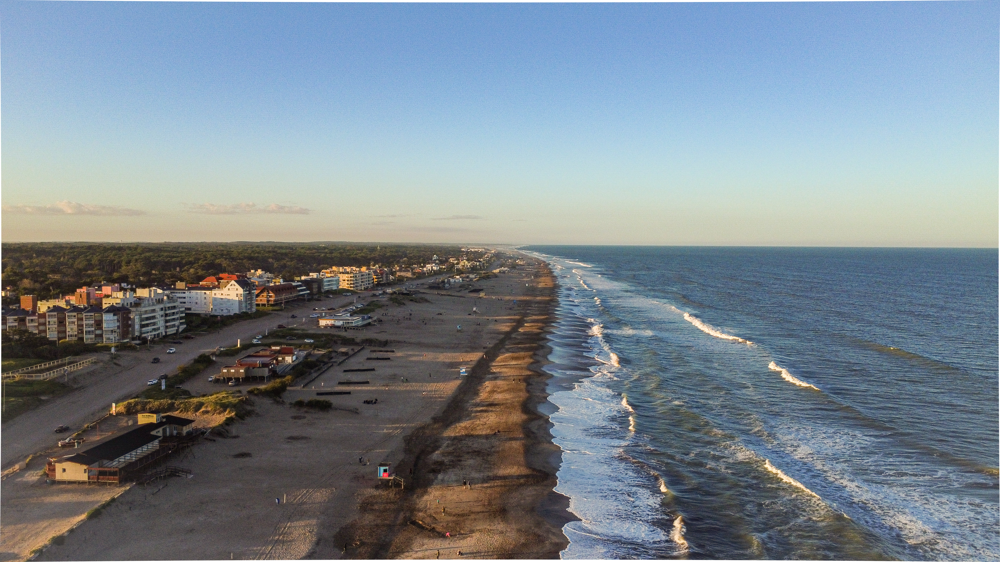
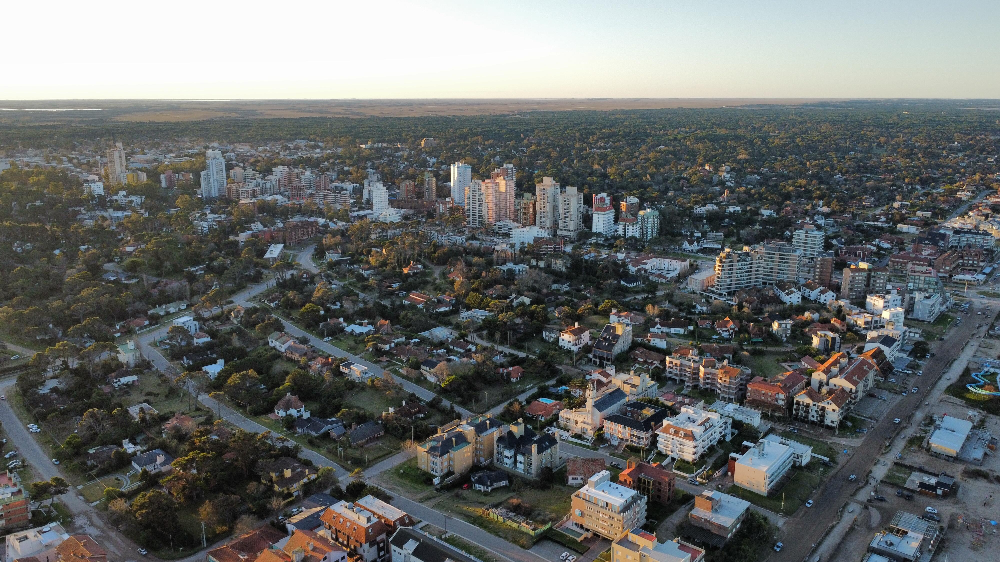
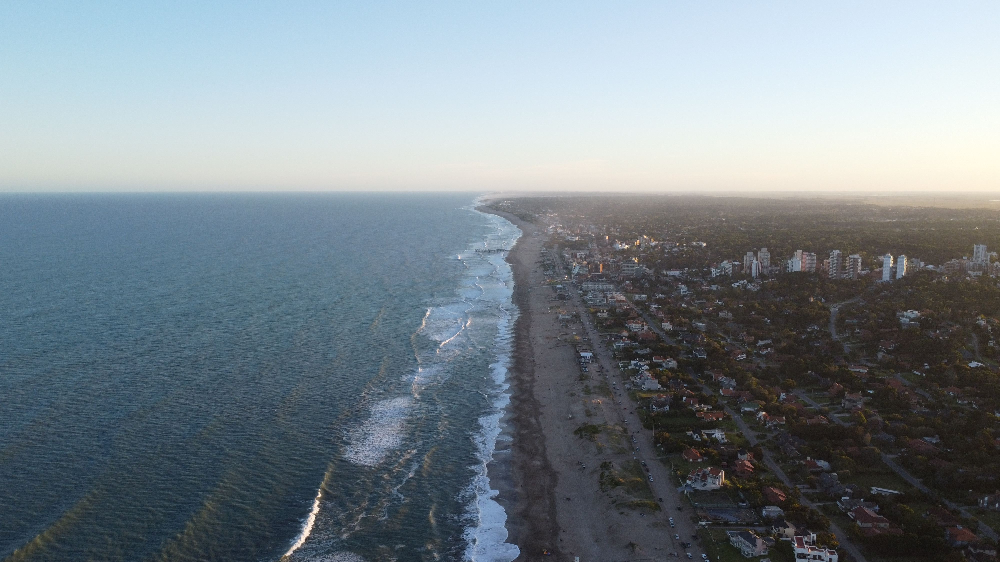
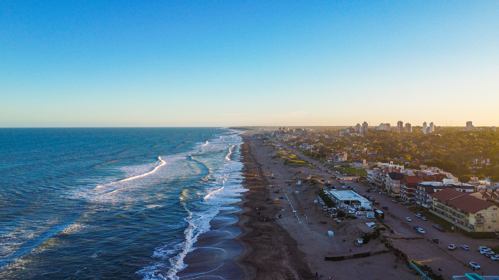
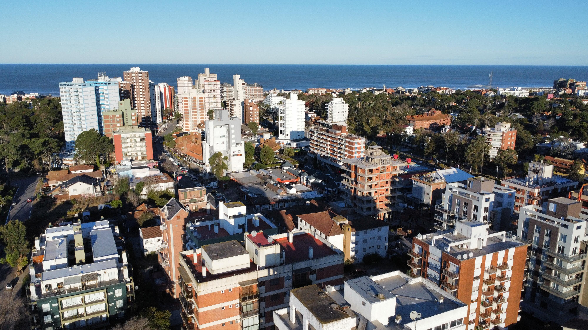
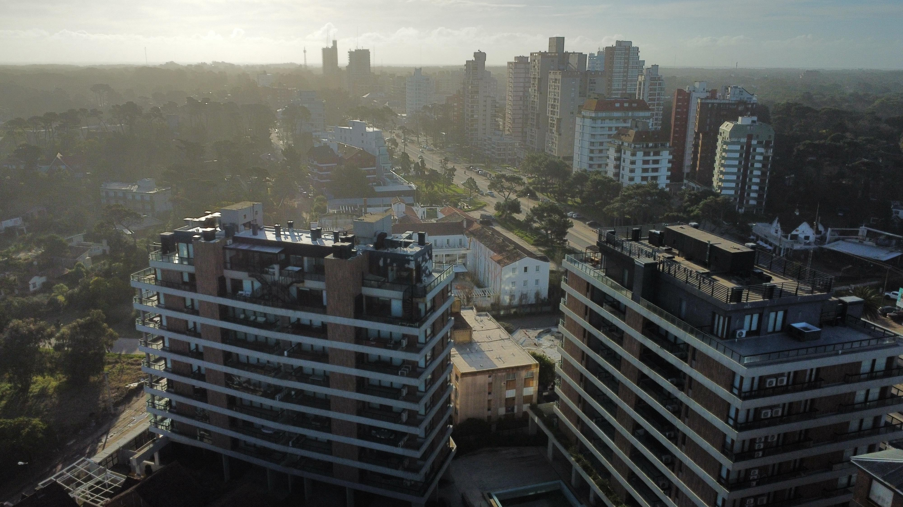

Caida del sol en la playa norte de Pinamar.

Zona urbana centro de Pinamar.

Costa Sur de Pinamar.

Atardecer en la costa vista sur.
Edificaciones en la zona urbana.

Edificios B-TWINS centro de Pinamar.